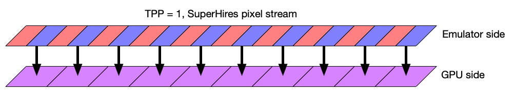
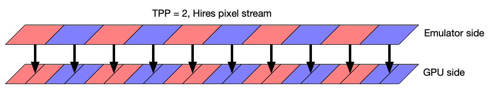
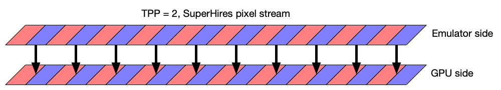

SuperHires mode¶
This document outlines how SuperHires mode is implemented in vAmiga. This mode is a feature of the ECS chipset and available e.g. on the Amiga 500+. SuperHires mode provides a pixel display rate of 35 ns, which is twice the horizontal resolution of Hires mode, and four times the resolution of Lores mode.
The integration of SuperHires mode into vAmiga was driven by three design goals:
Customizable texture size
Early versions of vAmiga generated a GPU texture in Hires resolution, meaning that each Hires pixel on the Amiga side corresponded to a single texel on the GPU side. The term texel is a mixture of the words pixel and commonly used to describe a single pixel in a GPU texture. Since SuperHires mode doubles the horizontal resolution, I had to decide whether the horizontal GPU texture size should be doubled, too. I have come to the conclusion that vAmiga should support two horizontal texture resolutions to better suit backends that do not take advantage of the higher resolution.
Low performance impact
SuperHires mode is a rarely used feature of the Amiga and the vast majority of users will be running vAmiga in one of the default modes most of the time. Therefore, the performance hit caused by adding SuperHires mode had to be kept as low as possible.
No code cluttering
One of the strengths of vAmiga is a clean code base. Therefore, my goal was to change the existing code as little as possible. I.e., I wanted to avoid cluttering the code with an armada of if-statements checking the currently used texture format.
To fulfill the first requirement I added a configuration option called TPP. This abbreviation stands for Texels Per Pixel and describes the number of texels that make up a single Hires pixel. TPP can be either 1 or 2. When set to 1, vAmiga generates a Hires texture, just like the early versions, meaning that each Hires pixel is represented by a single texel. If set to 2, vAmiga generates a texture in SuperHires resolution, which means each hires pixel is represented by two texels.
The following images illustrate the effects of the TPP setting. When TPP is equal to 1 and the Amiga draws a line in Hires mode, each Hires pixel is mapped to a single texel:
In SuperHires mode, however, the GPU texture is too coarse to represent each emulator pixel individually. In this case, the drawing logic interpolates two emulator pixels into a single texel:

If TPP equals 2, each Hires pixel is mapped to two texels:

In SuperHires mode, vAmiga performs a one-to-one mapping of SuperHires pixels to texels:

Let us revisit the design goals mentioned above. To achieve the latter two, TPP had to be made a compile-time option. This means that it has to be decided in advance which texture format should be used.
Let us now take a closer look at the compile-time changes triggered by TPP. The most important code fragment is located in FrameBufferTypes.h. Among others, this file defines the Texel type, which is used to address elements in the GPU texture. It is defined as follows:
#if TPP == 1
typedef u32 Texel;
#else
typedef u64 Texel;
#endif
As you can see, the value of TPP affects the underlying data type of Texel. When TPP equals 1, Texel corresponds to an unsigned 32-bit integer. If TPP equals 2, the data type is twice as large.
In addition, there is a macro called TEXEL which converts an 32-bit RGBA value into a Texel.
#if TPP == 1
#define TEXEL(rgba) (rgba)
#else
#define TEXEL(rgba) ((u64)rgba << 32 | rgba)
#endif
The definition of this macro reveals the trick vAmiga uses to keep the performance penalty low. If TPP equals 1, this macro is a direct mapping. In other words: If TPP equals 1, a Texel is a 32-bit value. If TPP equals 2, the TEXEL macro repeats the RGBA pattern. This means that the generated 64-bit value will represent the same RGBA value twice in a row. Thus, when the emulator sets a single texel in the texture, it actually sets two texels because a texel is always 32-bit on the GPU side. Since writing a 64-bit value is about as fast as writing a 32-bit value, the actual TPP value has no relevant impact on vAmiga’s performance. Of course, we have to pay a price on the GPU side. Since the emulator texture has doubled in size, the GPU has to move around twice as much memory for each frame.
Also, hiding the actual texture size in the Texel data type prevents the code quality to degrade. From the emulator side, the horizontal texture size appears to be independent of the TPP value, since everything is counted in texels. As a result, the same code can be used for both possible TPP values and there is no need to clutter the code with a large amount of if statements.